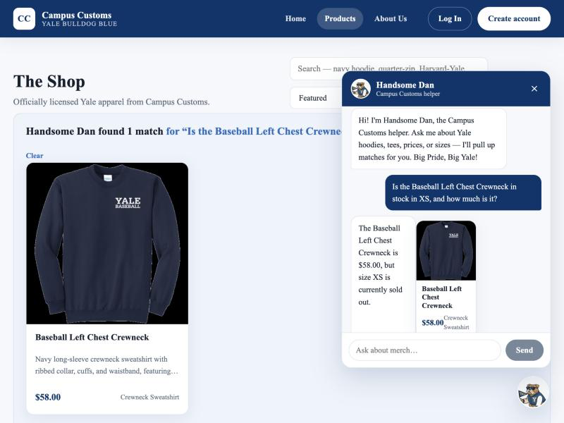
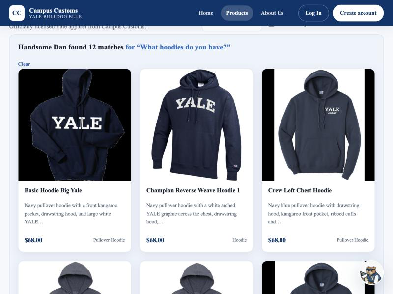
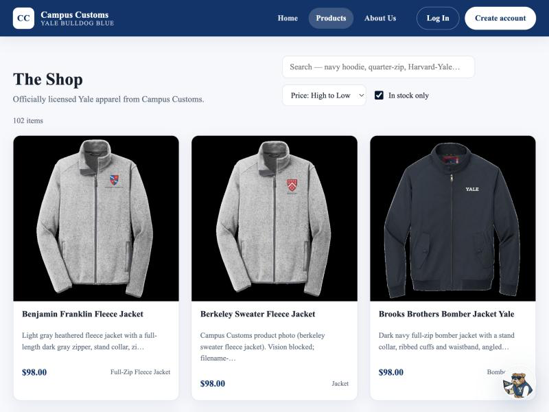

Check 1 — Chat gives honest price & stock from the database
Asked the chatbot (Handsome Dan): “Is the Baseball Left Chest Crewneck in stock in XS, and how much is it?”

What it proves: The agent calls its database tools and answers truthfully — it reports the exact price ($58.00) and that size XS is sold out, rather than inventing availability. Price and stock come straight from the catalogue and inventory tables.
Check 2 — A category question dynamically fills the page with product cards
Asked the chatbot: “What hoodies do you have?” The agent searched the catalogue and the matching items appeared on the Shop page as product cards.

What it proves: The agent returns structured product matches and the front end renders them live as cards (image, name, price, short info) — here “Handsome Dan found 12 matches.” Each card also opens the product’s detail page when clicked.
Check 3 — Usability feature (Problem 9): sort & “In stock only” on the Shop
On the Shop page, set the sort to “Price: High to Low” and enabled the “In stock only” toggle.

What it proves: The Problem 9 shopping controls work — the most expensive in-stock items ($98 jackets) sort to the top and sold-out items are hidden, so shoppers can browse by budget and availability.